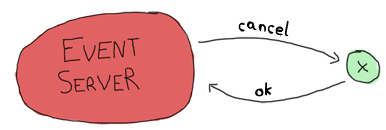
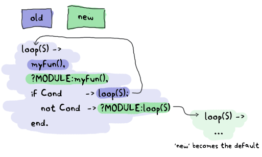

Designing a Concurrent Application

Bạn đã làm quen với các khái niệm cơ bản rồi, và cũng thực hành thông qua các ví dụ nhưng tất cả những gì kể từ đâu cuốn sách tới giờ chúng ta chủ phần lớn làm việc với các mẫu ví dụ cơ bản không có tính thực tiến. Giờ là lúc chúng ta sẽ bắt đầu làm điều gì đó thú vị và nâng cao kiến thức hơn. Trong chương này chúng ta sẽ viết một ứng dụng nhỏ cho phép xử lí concurrent trong Erlang. ứng dụng khá đơn giản và nhỏ nhưng vẫn hữu ích và hơn nữa chúng ta có thể mở rộng nếu muốn. All fine and dandy. You understand the concepts, but then again, all we've had since the beginning of the book were toy examples: calculators, trees, Heathrow to London, etc. It's time for something more fun and more educational. We'll write a small application in concurrent Erlang. The application's going to be small and line-based, but still useful and moderately extensible.
Nào giờ hay xét một ví du, hay đặt giả thiết rằng Tôi là một người sống vô tổ chức, tôi đã quên mất phải làm bài tập về nhà, dọn dẹp căn hộ, cuốn sách này, công việc, các cuộc họp, các cuộc hẹn. Phải có hẵn một tá các danh sách công việc mà thôi đã quên mất không làm hay không nhìn lại. Hy vọng là đôi khi bạn vẫn cần nhắc nhở những gì bạn làm ( có thể bạn không đãng trí như tôi ), vạy điều này liên quan gì tới điều chúng ta sắp lại , ah bởi ví chúng ta đạng dự định sẽ viết một ừng dụng cho phép nhắc nhờ nhanh chóng cho bạn về các cuộc họp. I'm a somewhat unorganized person. I'm lost with homework, things to do around the apartment, this book, work, meetings, appointments, etc. I end up having a dozen of lists everywhere with tasks I still forget to do or look over. Hopefully you still need reminders of what to do (but you don't have a mind that wanders as much as mine does), because we're going to write one of these event reminder applications that prompt you to do stuff and remind you about appointments.
Understanding the Problem
Thứ nhất bạn phải biết là chúng ta đang tính làm chuyện quaí gì vậy. Ah ban nói: "một ứng dụng nhắc nhở" tôi trả lời: "Tất nhiên rồi" . Nhưng chưa hết. Vậy chúng ta sẽ lên kế hoạch để tương tác với phần mềm như thế nào ? Chúng ta muốn ứng dụng này làm được gì cho chúng ta ? Làm thế nào để biểu diễn chương chình này dưới dạng các tiến trình. làm thế nào để biết được tin nhắn gửi những gì ? The first step is to know what the hell we're doing. "A reminder app," you say. "Of course," I say. But there's more. How do we plan on interacting with the software? What do we want it to do for us? How do we represent the program with processes? How do we know what messages to send?
Dựa trên một câu nói của Edward V. Berard: "Việc đi trên mặt nước và phát triển phần mềm từ một đặc điểm kỹ thuật cụ thể thật đễ nếu như chúng đều đóng băng lại." Do đó hay hãy tìm một đặc điểm kỹ thuật cụ thể và gắn với nó. Một phần nhỏ của ứng dụng sẽ cho phép làm được nhưng thứ sau: As the quote goes, "Walking on water and developing software from a specification are easy if both are frozen." So let's get a spec and stick to it. Our little piece of software will allow us to do the following:
- Chúng ta có thể thêm một sự kiện. Các sự kiện có thể có thời hạn ( thời điểm được cảnh báo ), tên sự kiện và mô tả sự kiện đó là gì. Add an event. Events contain a deadline (the time to warn at), an event name and a description.
- hiển thị cảnh báo khi tới thời điểm. Show a warning when the time has come for it.
- hủy bỏ một sự kiện dựa theo tên của nó. Cancel an event by name.
- Không cân phải lưu trữ dữ liệu trên ổ đĩa. Để chứng mình các khai niệm kiến trúc mà chúng ta sẽ xem xét, việc lưu trữ dữ liệu là không cần thiết. Đối với một ứng dụng thật thì cách làm này thật tệ nhưng tôi sẽ chỉ cho bạn nơi để chèn các đoạn mã giúp cho việc lưu trữ trên ổ đia nếu bạn muốn, đồng thời tôi cũng sẽ đưa ra một vài hàm hữu ích có thể giúp cho bạn việc này. No persistent disk storage. It's not needed to show the architectural concepts we'll see. It will suck for a real app, but I'll instead just show where it could be inserted if you wanted to do it and also point to a few helpful functions.
- Bởi vì chúng ta không sử dụng ổ đĩa đẻ lưu trữ dữ liệu do đó chúng ta phải cập nhật dữ liệu trong khi đang chạy. Given we have no persistent storage, we have to be able to update the code while it is running.
- Việc tương tác với ứng dụng sẽ thực hiện qua câu lệnh, nhưng có thể mở rộng về sau hay vì câu lệnh ( sử dụng GUI, truy cập thông qua trình duyệt web, sử dụng ) The interaction with the software will be done via the command line, but it should be possible to later extend it so other means could be used (say a GUI, web page access, thông qua phần mềm gửi tin nhắn, email, etc.) instant messaging software, email, etc.)
Dưới đây là cấu trúc của chương trình chúng ta sẽ thực hiện Here's the structure of the program I picked to do it:

Trong đó client, event server và x,y đều là các tiến trình. Chúng sẽ đảm nhiệm từng nhiệm vụ riêng: Where the client, event server and x, y and z are all processes. Here's what each of them can do:
Event Server
- Chấp nhận các đăng ký từ phía client gửi tới Accepts subscriptions from clients
- Chuyển tiếp các thông báo từ các tiến trình event tới từng client đã đăng ký (subscribers). Forwards notifications from event processes to each of the subscribers
- Chấp nhận các thông báo về việc bổ sung thêm các sự kiên - events ( cần bắt đầu các tiến trình x, y, z ) Accepts messages to add events (and start the x, y, z processes needed)
- Chấp nhận các thông báo hủy bỏ một sự kiên ( event ) và chấm dứt các tiến trình trong một chuỗi sự kiện đó Can accept messages to cancel an event and subsequently kill the event processes
- Cho phép client có quyền chấm dứt Can be terminated by a client
- Có khả năng nạp lại mã từ shell Can have its code reloaded via the shell.
client
- đăng ký sự kiện từ event server và nhận thông báo qua tin nhắn. Bằng cách này chúng ta có thể dễ dàng thiết kế một nhóm các client đăng ký sự kiện tới event server. Để bất kỳ ai trong số chúng cũng đều có khả năng phục vự như một cổng vào ( gateway ) các điểm tương tác khác nhau được đề cập ở trên (GUI, web page, instant messaging software, email, etc.) Subscribes to the event server and receive notifications as messages. As such it should be easy to design a bunch of clients all subscribing to the event server. Each of these could potentially be a gateway to the different interaction points mentioned above (GUI, web page, instant messaging software, email, etc.)
- Đưa ra yêu cầu server để thêm một sự kiện kèm theo thông tin chi tiết về sự kiện đó Asks the server to add an event with all its details
- Đưa ra yêu cầu server để hủy bỏ một sự kiện Asks the server to cancel an event
- Giám sát server ( để biết khi nào nó ngừng hoạt động ) Monitors the server (to know if it goes down)
- Ngừng hoạt động event server khi cần Shuts down the event server if needed
x, y and z:
- Chỉ ra một thông báo đã sàng sàng để kích hoạt ( bản chất chúng chỉ đơn giản là những bộ hẹn giờ được kết nối với event server ) Represent a notification waiting to fire (they're basically just timers linked to the event server)
- Gửi một tin nhắn tới event server khi hết thời gian Send a message to the event server when the time is up
- Nhận hủy bỏ môt tin nhắn Receive a cancellation message and die
Lưu ý là tất cả các client (không bao gồm IM, mail, etc. Bởi vhúng ta sẽ không thực hiện chúng trong cuốn sách nay ) mà được nhận thông báo về tất cả sự kiện cũng như hủy bỏ không phải là thông tin cần cảnh báo tới khách hàng. Ứng dụng này được viết chủ yếu cung cấp kiến thúc cho tôi và bạn, vì thế chúng ta luôn đặt giả thiết chỉ có duy nhất một người dùng đang sử dụng. Note that all clients (IM, mail, etc. which are not implemented in this book) are notified about all events, and a cancellation is not something to warn the clients about. Here the software is written for you and me, and it's assumed only one user will run it.
Đưới đây là tất cả các trường hợp về các tin nhắc có thể gửi và được mình họa qua một biểu đồ phức tạp. Here's a more complex graph with all the possible messages:

Biểu đồ minh họa trên đưa ra thông tin vê tất cả các tiến trình mà chúng ta có thể có. Như bạn thấy trong biểu đồ , các tin nhắn sẽ được biểu diễn bằng các mũi tên, bằng cách minh họa này chúng ta đang thực hiện chúng trong một giao thức bậc cao hoặc ít nhất là phác họa chúng. This represents every process we'll have. By drawing all the arrows there and saying they're messages, we've written a high level protocol, or at least its skeleton.
Cũng lên cân nhắc lưu ý là Trong một ứng dụng thực tế việc sử dụng một tiến trình cho mỗi sự kiện ( event ) rất lãng phí và khó khăn trong việc mở rộng.' Tuy nhiên, Đối với ứng dùng mà chỉ có duy nhất bạn là người dùng thì như vậy là đủ. Ngoài ra còn một cách tiếp cận khác nữa đó là sử dụng hàm timer:send_after/2-3 để tránh sinh ( spawn ) ra quá nhiều các tiến trình. It should be noted that using one process per event to be reminded of is likely going to be overkill and hard to scale in a real world application. However, for an application you are going to be the sole user of, this is good enough. A different approach could be using functions such as timer:send_after/2-3 to avoid spawning too many processes.
Defining the Protocol
Bây giờ chúng ta dã hình dung được các thành phần giao tiếp và công việc của chúng rồi. Nó sẽ là một ý tưởng hay để tạo ra danh sách các tin nhắn được gửi đi và chỉ định định dạng của chúng. Nào hãy băt đầu liên lạc giữa client và event server: Now that we know what each component has to do and to communicate, a good idea would be to make a list of all messages that will be sent and specify what they will look like. Let's first start with the communication between the client and the event server:

Ở đây , tôi sẽ sử dụng hai màn hình giám sát ( monitor ) cho client và event server bởi vì rõ ràng không có sự phụ thuộc giữa chúng. Tại sao tôi nói vậy, vì rõ ràng bạn thấy event server có thể hoạt động mà không cần có client nhưng ngược lại thì không. Chúng ta có thể sử dụng liên kết để đảm đương được công việc đó nhưng dể có thể mở rộng hệ thống tới nhiều client, do đó chúng ta không thể đặt giả thiết rằng các client cũng sẽ crash khi event server ngừng hoạt động, và cũng không thể đặt giả thiết là client có thể tự động chuyển thành một tiến trình hệ thống và trap exits khi event server ngừng hoạt động. Tiếp theo chúng ta sẽ nói về tập các tin nhắn: Here I chose to use two monitors because there is no obvious dependency between the client and the server. I mean, of course the client doesn't work without the server, but the server can live without a client. A link could have done the job right here, but because we want our system to be extensible with many clients, we can't assume other clients will all want to crash when the server dies. And neither can we assume the client can really be turned into a system process and trap exits in case the server dies. Now to the next message set:

Hình trên minh họa một sự kiện được thêm vào event server.
Ngay sau đó một xác nhận được gửi lại dưới dạng một atom ok. Trong trường hợp có một sự cố ( nguyên nhân có thể do TimeOut được gửi sai đinh dạng ) thì
hoạt động đảo ngược, xóa bỏ các sự kiện có thể được thực hiện như sau:
This adds an event to the event server. A confirmation is sent back under the form of the ok atom,
unless something goes wrong (maybe the TimeOut is in the wrong format.) The inverse operation, removing events, can be done as follows:

Sau đó event server sẽ gửi một thông báo về sự kiện đã xảy ra The event server can then later send a notification when the event is due:

Tiêp đó chúng ta chỉ cần thực hiện theo hai trường hợp đặc biệt sau để tắt event server hoặc khi nó bị crash: Then we only need the two following special cases for when we want to shut the server down or when it crashes:

Sẽ không có bất kỳ xác nhận nào được gửi trưc tiếp từ event server khi nó ngừng hoạt động nhưng màn hình giám sát sẽ làm việc này để cảnh báo cho chúng ta biết. Đó là tất cả những gì sẽ xảy ra giữa client và event server. Bây giờ chúng ta sẽ xem về mối liên hệ giữa các tin nhắn và event server và các tiến trình event. No direct confirmation is sent when the server dies because the monitor will already warn us of that. That's pretty much all that will happen between the client and the event server. Now for the messages between the event server and the event processes themselves.
Có Một điều lưu ý ở đây là trước tiên chúng ta sẽ bắt đầu các liên kết giữa event server và các sự kiện, Bởi vì chúng ta muốn đảm bảo rằng các sự kiện sẽ ngừng hoạt động ngay khi server tắt. A thing to note here before we start is that it would be very useful to have the event server linked to the events. The reason for this is that we want all events to die if the server does: they make no sense without it.
Ok, hay qua lại các sự kiện. Khi event server tạo ra chúng, nó sẽ gán một đinh danh cụ thể cho mỗi sư kiện đó ( tên sự kiện ) . Một khi một trong số các sự kiện này tới thời điểm kích hoạt, nó sẽ gửi một thông báo cùng với nội dung: so back to the events. When the event server starts them, it gives each of them a special identifier (the event's name). Once one of these events' time has come, it needs to send a message saying so:

Nói một cách kahcs, các sự kiện sẽ phải theo dõi các cuộc gọi hủy bỏ từ event server On the other hand, the event has to watch for cancel calls from the event server:
Vậy là chúng ta đã giới thiệu gần hết các loại tin nhắn rồi, tin nhắn cuối cùng chúng ta cần cho giao thức đó là thông báo cho phép event server cập nhật , nâng cấp server. And that should be it. One last message will be needed for our protocol, the one that lets us upgrade the server:

Không cần thiết phải trả lời tin nhắn này. khi chúng ta bắt đầu đi vào viết ứng dụng bạn sẽ thấy rõ. No reply is necessary. We'll see why when we actually program that feature and you'll see it makes sense.
Từ những phân tích trên chúng ta đã xác định được giao thức và ý tưởng chung về cấu trúc của hệ thống phân cấp tiến trình rồi, giờ là chúng ta có thể bắt tay vào triển khai dự án được rồi. Having both the protocol defined and the general idea of how our process hierarchy will look in place, we can actually start working on the project.
Lay Them Foundations

Trước khi bắt đầu, chúng lên đưa ra một cấu trúc thư mục chuẩn trong Erlang, nó sẽ có dang như sau: To begin with it all, we should lay down a standard Erlang directory structure, which looks like this:
ebin/ include/ priv/ src/
Trong đó thư mục ebin/ sẽ chứa các file được biên dịch. Thư mục include/ dùng để lưu trữ các file record có định dạng .hrl,
các file này sẽ được chèn vào bên trong các ứng dụng khác, các file định dạng .hrl riêng, các file mà chỉ dùng với ứng dụng hiện tại thì
thường được đặt trong thư mục src/. Thư mục priv/, đây là thư mục chưa các file thực thi có thể tương tác được với Erlang,
chúng bao gồm một số các driver. Tuy nhiên với dự án này, chúng ta sẽ không sử dụng tới các file trong thư mục này.
Cuối cùng thư mục src/, đây sẽ là thư mục chứa các file .erl.
directory is where files will go once they are compiled. The include/ directory is used to store .hrl
files that are to be included by other applications; the private .hrl files are usually just kept inside the src/ directory.
The priv/ directory is used for executables that might have to interact with Erlang, such as specific drivers and whatnot.
We won't actually use that directory for this project. Then the last one is the src/ directory, where all .erl files stay.
Ngoài ra trong các dự án tiêu chuẩn Erlang, cấu trúc thư mục này có khác biệt đôi chút.
Thư mục conf/ có thể được thêm vào các file cấu hình để xác định cáu hình cho hệ thống, ứng dụng.
Các file tài liệu sẽ nằm trong thư mục doc/ và các thư viện của bên thứ 3 mà ứng dụng của bạn sử dụng sẽ đặt trong thư mục
lib/. Hầu hết cấu trúc thư mục chuẩn của Erlang sẽ như vậy một số trường hợp, trong các ứng dụng thực tế khác có thể sẽ đặt tên các thư mục
khác nhau nhưng ý nghĩa không thay đổi nhiều. Riêng bốn thư mục đề cập phía trên thường sẽ không thay đổi mấy bởi vì chúng là một phần trong
standard OTP practices.
conf/ directory can be added for specific configuration files,
doc/ for documentation and lib/ for third party libraries required for your application to run.
Different Erlang product on the market often use different names than these,
but the four ones mentioned above usually stay the same given they're part of the
standard OTP practices.
An Event Module
Nào hãy mở thư mục src/ lên và tạo một file module và đặt tên là event.erl,
file module này sẽ thực hiện các sự kiện x, y, z như hình vẽ trước đó ).
Chúng ta bắt module này trước tien vì nó là một trong những module có ít phụ thuộc nhất:
chúng ta có thể chạy thử nó mà không cần phải thực hiện các chức năng cho event server hay client.
Get into the src/ directory and start an event.erl module, which will
implement the x, y and z events in the earlier drawings.
I'm starting with this module because it's the one with the fewest dependencies: we'll be able to try to run it without needing to implement the event server or client functions.
Trước khi bắt tay vào viết code, tôi phải nhắc bạn rằng giao thức này của chúng ta phát triển vẫn chưa thực sự đầy đủ.
Trong giao thức này nó sẽ giúp chúng ta hiển thị quá trình gửi dữ liệu giữa các tiến trình với nhau nhưng sẽ không mô tả chi tiết quá trình gửi:
vd như cách địa chỉ của các tiến trình đang hoạt động như thế nào thay vào đó những gì chúng ta đang sử dụng là tài liệu tham khảo hay tên.
Hầu hết các tin nhắn sẽ được bao bọc trong một bộ có dạng {Pid, Ref, Message}, trong đó Pid là định danh của tiến trình gửi đi
và Ref là định danh duy nhất của tin nhắn, để giúp chúng ta biết được tin nhắc phản hồi đó tới từ ai.
Trong trường hợp nếu chúng ta gưi quá nhiều tin nhắc trước khi tìm kiếm, đợi phản hồi, thì chúng ta sẽ không thể biết được sẽ phản hồi tin nhắn ra sao nếu không có
một địa chỉ tham chiếu.
Before really writing code, I have to mention that the protocol is incomplete. It helps represent what data will be sent from process to process,
but not the intricacies of it: how the addressing works, whether we use references or names, etc. Most messages will be wrapped under the form {Pid, Ref, Message},
where Pid is the sender and Ref is a unique message identifier to help know what reply came from who.
If we were to send many messages before looking for replies, we would not know what reply went with what message without a reference.
Giờ chúng ta sẽ bắt đầu viết, phần cốt lõi quá trình thực thi các đoạn mã trong module event.erl sẽ là hàm loop/1, nếu bạn nhớ
giao thức mà chúng ta đã phác thảo lúc trước thì nó sẽ thực hiện tương tự như vậy:
So here we go. The core of the processes that will run event.erl's code will be the function loop/1,
which will look a bit like the following skeleton if you remember the protocol:
loop(State) ->
receive
{Server, Ref, cancel} ->
...
after Delay ->
...
end.
Ở đây, chúng ta thấy sủ dụng timeout để thông báo một sự kiện đã tới cũng như cách để server hủy bỏ một sự kiện.
Hãy để ý biến State trong hàm 'loop', biến này sẽ phảu chứa dữ liệu giống như giá trị timeout ( đơn vị là giây ),
tên của sự kiện ( theo thứ tự gửi thông báo có dạng {done, Id}.). Nó cũng cần phải biết định danh của event server để gửi thông báo.
This shows the timeout we have to support to announce an event has come to term and the way a server can call for the cancellation of an event.
You'll notice a variable State in the loop. The State variable will have to contain data such as the timeout value (in seconds)
and the name of the event (in order to send the message {done, Id}.) It will also need to know the event server's pid in order to send it notifications.
tât cả những thông tin này thích hợp để lưu trữ trạng thái của loop. Và để thực hiện, chúng ta sẽ khai báo một bản ghi state
và đặt nó ở đầu file:
This is all stuff that's fit to be held in the loop's state. So let's declare a state record on the top of the file:
-module(event).
-compile(export_all).
-record(state, {server,
name="",
to_go=0}).
Cùng với định nghĩa bản ghi state, chúng ta có thể thay đổi lại hàm 'loop'một chút
it should be possible to refine the loop a bit more:
loop(S = #state{server=Server}) ->
receive
{Server, Ref, cancel} ->
Server ! {Ref, ok}
after S#state.to_go*1000 ->
Server ! {done, S#state.name}
end.
Ở đây, ở mệnh đề after chúng ta sử dụng tích của giá trị trong to_go với 1000 để chuyển đổi từ đơn vị giây sang mili giây
Here, the multiplication by a thousand is to change the to_go value from seconds to milliseconds.
Don't drink too much Kool-Aid:
Lí giải vì sao tôi liên kết với biến 'Server' ở đầu hàm, đó là bởi vì nó sẽ được sử dụng để làm giá trị khớp mẫu trong biểu thức receive.
Hãy nhớ lại về cách sử dụng bản ghi mà chúng ta đã học trong records are hacks!,
biểu thức S#state.server sẽ ngầm gọi tới element(2, S), đo đó nó không thể coi là một mẫu hợp lệ để khớp được.
Language wart ahead! The reason why I bind the variable 'Server' in the function head is because it's used in pattern matching in the receive section.
Remember, records are hacks! The expression S#state.server
is secretly expanded to element(2, S), which isn't a valid pattern to match on.
Mặc dù vậy nó hoạt động dược với S#state.to_go như một phần của mệnh đề after, đó là bởi vì
vẫn còn một biểu thức chưa được đanh giá có thể bị trì hoãn.
This still works fine for S#state.to_go after the after part, because that one can be an expression left to be evaluated later.
Giờ chúng ta sẽ kiểm tra hàm này: Now to test the loop:
6> c(event).
{ok,event}
7> rr(event, state).
[state]
8> spawn(event, loop, [#state{server=self(), name="test", to_go=5}]).
<0.60.0>
9> flush().
ok
10> flush().
Shell got {done,"test"}
ok
11> Pid = spawn(event, loop, [#state{server=self(), name="test", to_go=500}]).
<0.64.0>
12> ReplyRef = make_ref().
#Ref<0.0.0.210>
13> Pid ! {self(), ReplyRef, cancel}.
{<0.50.0>,#Ref<0.0.0.210>,cancel}
14> flush().
Shell got {#Ref<0.0.0.210>,ok}
ok
Có rất nhiều thứ được nhìn thấy ở đây. Đầu tiên, chúng ta đã nạp bản ghi từ module sự kiện ( event ) vào trong shell bằng lệnh rr(Mod),
tiếp đó chúng ta sinh (spawn) ra tiến trình sự kiện ( hàm loop ) và sử dụng tiến trình shell hiện tại thay thế cho tiến trình server (self()).
sư kiện này lên kích hoạt sau 5 giây. xét thời điểm ở biểu thức thứ 9 , khi đó chương trình của chúng ta đã chạy được 3 giấy rồi, và ở biểu thứ thứ 10 là 6s,
như bạn nhin thấy chúng ta đã nhận được thông báo {done, "test"} tại lần thử thứ hai.
Lots of stuff to see here. Well first of all, we import the record from the event module with rr(Mod). Then, we spawn the event loop
with the shell as the server (self()). This event should fire after 5 seconds. The 9th expression was run after 3 seconds,
and the 10th one after 6 seconds. You can see we did receive the {done, "test"} message on the second try.
Tiếp sau đó, tôi đã thử tính năng hủy bỏ ( cùng với việc tạo ra một sự kiện và kích hoạt nó sau ̀500 giây ).
bằng cách tạo ra một tiến trình đinh danh tham chiều (reference), và gửi đi một tin nhắn, ngay lập tức
tôi nhận được một phản hồi cùng với nội dung là ok. Như bạn thấy tôi đã hận được phản hồi từ chính
tiến trình đinh danh tham chiều này chứ không phải từ bất kỳ một tiến trình nào khác trên hệ thống.
Right after that, I try the cancel feature (with an ample 500 seconds to type it).
You can see I created the reference,
sent the message and got a reply with the same reference so I know the ok
I received was coming from this process and not any other on the system.
Để giải thích lí do vì sao việc hủy bỏ tin nhắn được bao bọc cùng với tiến trình tham chiều
nhưng tinh nhắc done thì không, đó là bởi vì chúng ra không mong đợi nó
tới từ một tiến trình xác đinh ( bất cứ tiến trình nào cũng làm được và chúng ta sẽ không so sánh để khơp trong mệnh đề receive)
cũng như muốn nhận phản hồi từ tiến trình đó. Ngay lúc này, tôi muốn làm một số kiểm tra, trong kiếm tra này tôi sẽ
tạo một sự kiện và thời gian đợi của nó là 1 năm.
Vậy điều gì sẽ xảy ra nếu một sự kiện xảy ra trong năm tiếp theo ?
The reason why the cancel message is wrapped with a reference
but the done thì không, message isn't is simply
because we don't expect it to come from anywhere specific (any place will do, we won't match on the receive)
nor should we want to reply to it. There's another test I want to do beforehand. What about an event happening next year?
15> spawn(event, loop, [#state{server=self(), name="test", to_go=365*24*60*60}]).
<0.69.0>
16>
=ERROR REPORT==== DD-MM-YYYY::HH:mm:SS ===
Error in process <0.69.0> with exit value: {timeout_value,[{event,loop,1}]}
Ouch. Có vẻ như chúng ta đã gặp một hạn chế , thự tế là giá trị timeout trong Erlang bị giới hạn khoảng 50 ngày ( quy đổi ra mili giấy hay nói chính xác là tối đa giá trị cho phép của timeout trong Erlang là 2^32 hay 16#ffffffff ). Có lẽ diều này không đáng kể lắm nhưng tôi sẽ chỉ ra 3 lí do của lỗi này cho bạn thấy: It seems like we hit an implementation limit. It turns out Erlang's timeout value is limited to about 50 days in milliseconds. It might not be significant, but I'm showing this error for three reasons:
- Lí đầu tiên đó là nó như ngoạm vào mông khi chúng ta đang viết module này và kiểm tra xuyên suốt nửa chương này rồi. It bit me in the ass when writing the module and testing it, halfway through the chapter.
- Lí do tiếp theo đó là Erlang không phải là ngôn ngữ lý tưởng để làm bất cứ công việc ( task ) nào cả, những gì chúng ta thấy ở đây là hậu quả của việc sử dụng bộ tính giờ theo cách mà không được các nhà phát triển khuyến khích. Erlang is certainly not perfect for every task and what we're seeing here is the consequences of using timers in ways not intended by the implementers.
- Cuối cùng thì thực sự lỗi này không phải vấn đề quá lớn gì hết, và chúng ta hoàn toàn có thể tránh được lỗi này That's not really a problem; let's work around it.
Để sửa lại sai xót tối quyết định sẽ viết lại một hàm có chức năng chia nhỏ giá trị timeout thành nhiều phần khi nó vượt quá giá trị cho phép trong Erlang.
Tất nhiên là hàm loop/1 cũng sẽ yêu cầu thay đổi một chút. Nói chung, chúng ta sẽ chia nhỏ thời gian thành các phần bằng nhau mỗi phần sẽ
dài khoảng 49 ngày ( bởi vì giới hạn cho phép trong Erlang là xấp xỉ ̀50 ngày ), sau đó đặt các phần còn lại này vào danh sách sao cho tổng
của chúng ( tính theo đơn vị giây ) bằng với giá trị gốc.
The fix I decided to apply for this one was to write a function that would split the timeout value into many parts if turns out to be too long.
This will request some support from the loop/1 function too. So yeah, the way to split the time is basically divide it in equal parts of 49 days
(because the limit is about 50), and then put the remainder with all these equal parts. The sum of the list of seconds should now be the original time:
%% Because Erlang is limited to about 49 days (49*24*60*60*1000) in
%% milliseconds, the following function is used
normalize(N) ->
Limit = 49*24*60*60,
[N rem Limit | lists:duplicate(N div Limit, Limit)].
Bằng cách sử dụng List Compréhesion và hàm lists:duplicate/2
chúng ta sẽ truyền vào tham số thứ hai của hàm là một biểu thức mà đã định nghĩa trước và
lặp lại dựa trên giá trị trong tham số thứ nhất ( ví dụ: [a,a,a] = lists:duplicate(3, a)).
nếu chúng ta truyền một giá trị 98*24*60*60+4 vào trong hàm normalize/1,
kết quả chúng ta sẽ nhận được sẽ là [4,4233600,4233600]. Tiếp đó hàm loop/1 của chúng ta sẽ thay đổi lại như
sau để phù hợp với định dạng mới:
will take a given expression as a second argument and reproduce it as many times as the value of the first argument ([a,a,a] = lists:duplicate(3, a)).
If we were to send normalize/1 the value 98*24*60*60+4, it would return [4,4233600,4233600].
The loop/1 function should now look like this to accommodate the new format:
%% Loop uses a list for times in order to go around the ~49 days limit
%% on timeouts.
loop(S = #state{server=Server, to_go=[T|Next]}) ->
receive
{Server, Ref, cancel} ->
Server ! {Ref, ok}
after T*1000 ->
if Next =:= [] ->
Server ! {done, S#state.name};
Next =/= [] ->
loop(S#state{to_go=Next})
end
end.
Bây giờ nó đã hoạt động mà không có vấn đề gì, nếu không tin bạn có thể thử kiểm tra.
Ngoài ra bạn cũng có thể thử cả trường hợp giá trị timeout trong vài năm.
Vậy nó hoạt động như thế nào ?
Đầu tiên nó sẽ trích xuất phần tử đầu tiên trong danh sách biến to_go ra và chuyển sang trạng thái chờ với
thời gian chờ bằng đúng thời gian mà đã trích xuất. sau đó khi thời gian chờ kết thức, nó sẽ tìm kiếm
trong danh sách và lấy phần tử của timeout tiếp theo ra nếu có, cứ tiếp tục lặp lại như vậy cho tới khi không còn phần từ nào trong danh sách nữa
khi đó tính từ thời gian chờ trong phần từ cuối cùng kết thúc, server sẽ nhận được thông báo.
You can try it, it should work as normal, but now support years and years of timeout.
How this works is that it takes the first element of the to_go list and waits for its whole duration.
When this is done, the next element of the timeout list is verified. If it's empty, the timeout is over and the server is notified of it.
Otherwise, the loop keeps going with the rest of the list until it's done.
bạn se cảm thấy rát phiền phức khi mà mỗi lần sinh ra mới một tiến trình sự kiện lại phải gọi thủ công hàm event:normalize(N),
Đặc biệt khi bạn muốn các lập trình viên khác sử dụng đoạn mã này mà không cần phải quan tâm tới vấn đề trên.
Do đó giải pháp tiêu chuẩn để giải quyết vân đề này đó là thêm một hàm init để xứ lí tất cả chức năng liên quan tới việc khởi tạo
dữ liệu dùng cho hàm 'loop'. Vì chúng ta đang thực hiện, do đó chúng sẽ thêm các hàm chuẩn start và start_link:
It would be very annoying to have to manually call something like event:normalize(N) every time an event process is started,
especially since our workaround shouldn't be of concern to programmers using our code. The standard way to do this is to
instead have an init function handling all initialization of data required for the loop function to work well.
While we're at it, we'll add the standard start and start_link functions:
start(EventName, Delay) ->
spawn(?MODULE, init, [self(), EventName, Delay]).
start_link(EventName, Delay) ->
spawn_link(?MODULE, init, [self(), EventName, Delay]).
%%% Event's innards
init(Server, EventName, Delay) ->
loop(#state{server=Server,
name=EventName,
to_go=normalize(Delay)}).
Bây giờ giao diện nhìn chúng có vẻ gọn gàng hơn rồi. Trước khi tiến hành kiểm tra, sẽ tốt hơn là việc chúng ta có những hàm riêng ứng với từng chức năng gửi, hủy bỏ tin nhắn thay vì phải làm thủ công trên shell: The interface is now much cleaner. Before testing, though, it would be nice to have the only message we can send, cancel, also have its own interface function:
cancel(Pid) ->
%% Monitor in case the process is already dead
Ref = erlang:monitor(process, Pid),
Pid ! {self(), Ref, cancel},
receive
{Ref, ok} ->
erlang:demonitor(Ref, [flush]),
ok;
{'DOWN', Ref, process, Pid, _Reason} ->
ok
end.
Oh! Đây là một mẹo mới! Ở đây tôi đã sử dụng màn hình giám sát ( monitor ) để theo dõi tiến trình có tồn tại hay không,
trong trường hợp nó đã ngừng hoạt động trước đó rồi, tôi sẽ tránh được việc lãng phí thời gian để chờ đợi một cách vô nghĩa,
thay vào đó tôi sẽ nhận được thông báo ok giống với những gì mà chúng ta đã phác thảo trong giao thức.
Nếu tiến trình phản hồi cùng với thông tin về tiến trình tham chiếu, tức la tôi sẽ biết răng tiến trình đó sẽ sỡm ngừng hoạt động:
như vậy tôi sẽ xóa bỏ tiến tiến trình tham chiếu này đi để tránh nhận được các tin nhắn không cần thiết nữa.
Lưu ý là hàm flush cũng được cung cấp sử dụng như một tùy chọn, nó sẽ xóa tin nhắn DOWN nếu nó đã đươc gửi đi trước khi
ngưng việc giám sát.
A new trick! Here I'm using a monitor to see if the process is there or not. If the process is already dead,
I avoid useless waiting time and return ok as specified in the protocol. If the process replies with the reference,
then I know it will soon die: I remove the reference to avoid receiving them when I no longer care about them. Note that I also supply the
flush option, which will purge the DOWN message if it was sent before we had the time to demonitor.
Let's test these:
17> c(event).
{ok,event}
18> f().
ok
19> event:start("Event", 0).
<0.103.0>
20> flush().
Shell got {done,"Event"}
ok
21> Pid = event:start("Event", 500).
<0.106.0>
22> event:cancel(Pid).
ok
Tuyệt nó hoạt động chính xác! Tuy vậy vẫn còn một tính nằng của module sự kiện ( event ) gây phiền phức cho chúng ta, khi sinh ra một sự kiện chúng ta cần phải xác định thời gian
chờ cho sự kiện đó, tuy vậy thời gian này chúng ta vẫn đang sử dụng theo dơn vị giây, tốt hơn hết néu chúng ta có thể sử dụng thời gian ở định dạng chuẩn, ví dụ như
({{Year, Month, Day}, {Hour, Minute, Second}}). Để làm điều này chúng ta chỉ cần tạo ra một hàm time_to_go/1, hàm này sẽ tính
khlảng thời gian chênh lệch giữa đô trễ thơi gian bạn nhập vào so với thời gian hiện tại của hệ thống, mấy tính:
And it works! The last thing annoying with the event module is that we have to input the time left in seconds.
It would be much better if we could use a standard format such as Erlang's datetime
({{Year, Month, Day}, {Hour, Minute, Second}}). Just add the following
function that will calculate the difference between the current time on your computer and the delay you inserted:
time_to_go(TimeOut={{_,_,_}, {_,_,_}}) ->
Now = calendar:local_time(),
ToGo = calendar:datetime_to_gregorian_seconds(TimeOut) -
calendar:datetime_to_gregorian_seconds(Now),
Secs = if ToGo > 0 -> ToGo;
ToGo =< 0 -> 0
end,
normalize(Secs).
Oh, yeah. module calendar
có cái tên thật hài hước. Như đã đè cập ở trên, đây là phép tính toán giữa thời điểm hiện tại trên hệ thống và khi một sự kiện được kích hoạt.
Nếu sự kiện đó đa qua, chúng ta sẽ trả về giá trị 0 và gửi thông báo tới server sớm nhất có thể .
Nao giờ hãy sửa lại hàm 'init' để gọi hàm này thay vì hàm normalize/1.
Ngoài ra bạn cũng có thể đổi tên biên Delay thành DateTime nếu như bạn muốn một cái tên mô tả chính xác ý nghĩa của đoạn mã đó hơn.
has pretty funky function names. As noted above, this calculates the number of seconds between now and when the event is supposed to fire. 44
If the event is in the past, we instead return 0 so it will notify the server as soon as it can.
Now fix the init function to call this one instead of normalize/1. You can also rename Delay variables to say DateTime
if you want the names to be more descriptive:
init(Server, EventName, DateTime) ->
loop(#state{server=Server,
name=EventName,
to_go=time_to_go(DateTime)}).
Vậy là chúng ta đã hoàn thành module sự kiện này rồi, bây giờ bạn có thể nghỉ nghơi một chút. Bắt đầu một sự kiện mới và thư giãn bằng cách uống một cốc sữa hay bear ( nửa lit ) và quay trở lại sau khi một thông báo về sự kiện đó tới. Now that this is done, we can take a break. Start a new event, go drink a pint (half-litre) of milk/beer and come back just in time to see the event message coming in.
The Event Server
Tiếp theo chúng ta sẽ xét event server. Như những gì mà giao thức của chúng ta minh họa, cấu trúc của nó sẽ có dạng như sau: Let's deal with the event server. According to the protocol, the skeleton for that one should look a bit like this:
-module(evserv).
-compile(export_all).
loop(State) ->
receive
{Pid, MsgRef, {subscribe, Client}} ->
...
{Pid, MsgRef, {add, Name, Description, TimeOut}} ->
...
{Pid, MsgRef, {cancel, Name}} ->
...
{done, Name} ->
...
shutdown ->
...
{'DOWN', Ref, process, _Pid, _Reason} ->
...
code_change ->
...
Unknown ->
io:format("Unknown message: ~p~n",[Unknown]),
loop(State)
end.
Bạn có thể nhận thấy trước đó tôi đã bao bọc các lời gọi mà yêu cầu thông báo phản hồi có cùng một định dạng {Pid, Ref, Message}.
Còn bây giờ, server sẽ cần phải lưu trũ hai thứ trong một trạng thái: đó là một danh sách các cient đã đăng ký và danh sách tất cả các tiến trình sự kiện được sinh ra và kết nối với
server. Nếu bạn để ý giao thức, khi mọt sự kiện hoàn tất, server sẽ nhận được một thông báo {done, Name}, nhưng gửi {done, Name, Description}.
ý tưởng ở đây là có không cần thiết có nhiều truy cập và để cho các tiến trình sự kiện xử lí những xử kiện cần thiết thôi. do vậy, dưới đây là định nghĩa của danh sách client và
danh sách sự kiện:
You'll notice I have wrapped calls that require replies with the same {Pid, Ref, Message} format as earlier.
Now, the server will need to keep two things in its state: a list of subscribing clients and a list of all the event processes it spawned.
If you have noticed, the protocol says that when an event is done, the event server should receive {done, Name}, but send {done, Name, Description}.
The idea here is to have as little traffic as necessary and only have the event processes care about what is strictly necessary. So yeah, list of clients and list of events:
-record(state, {events, %% list of #event{} records
clients}). %% list of Pids
-record(event, {name="",
description="",
pid,
timeout={{1970,1,1},{0,0,0}}}).
Và hàm 'loop' giờ sẽ sử dụng bản ghi ở đầu hàm như sau: And the loop now has the record definition in its head:
loop(S = #state{}) ->
receive
...
end.
sẽ tốt hơn nếu bạn sử dụng kiểu cấu trúc orddicts cho việc lưu trữ cả client lẫn sự kiện ( event ).
Bởi vì như chúng ta sẽ không thẻ có hàng trăm client và sự kiện cùng lúc được.
cấu trúc orddicts rất thích hợp để sử dụng trong trường hợp này, hãy nhớ lại cấu trúc này trong chương data structures
mà chúng ta đã học trước đó. Nào giờ chúng ta sẽ viết một hàm init để xứ lí:
It would be nice if both events and clients were orddicts.
We're unlikely to have many hundreds of them at once.
If you recall the chapter on data structures,
orddicts fit that need very well. We'll write an init function to handle this:
init() ->
%% Loading events from a static file could be done here.
%% You would need to pass an argument to init telling where the
%% resource to find the events is. Then load it from here.
%% Another option is to just pass the events straight to the server
%% through this function.
loop(#state{events=orddict:new(),
clients=orddict:new()}).
Chúng ta đã hoàn thành cơ bản cấu trúc và việc khởi tạo. tiếp theo tôi sẽ thực hiện từng các chức năng trong từng mẫu tin nhắn mà chúng ta đã dịnh nghĩa trước đó. tin nhắn đầu tiên mà chúng ta xét sẽ liên quan tới việc đăng ký. Bởi vì chúng ta muốn lưu trữ một danh sách tất cả các ngừoi đăng ký khi một sự kiện xảy ra, và thông báo tới họ. Ngoài ra trong giao thức minh họa ở trên, chúng cũng cần giám sát họ. Việc làm này có ý nghĩa vì chúng ta không muốn giữ các client những người đã bị crash và gửi những dòng tin nhắc vô nghĩa mà không có lí do gì. With the skeleton and initialization done, I'll implement each message one by one. The first message is the one about subscriptions. We want to keep a list of all subscribers because when an event is done, we have to notify them. Also, the protocol above mentions we should monitor them. It makes sense because we don't want to hold onto crashed clients and send useless messages for no reason. Anyway, it should look like this:
{Pid, MsgRef, {subscribe, Client}} ->
Ref = erlang:monitor(process, Client),
NewClients = orddict:store(Ref, Client, S#state.clients),
Pid ! {MsgRef, ok},
loop(S#state{clients=NewClients});

Vậy sao bên trong hàm loop/1 lại sử dụng một màn hình giám sát ( monitor ), và sử dụng định danh tham chiếu của màn hình này
như một khóa trong orddict để lưu trữ thông tin của client. Tôi làm vậy bởi lí do rất đơn giản: trong một số thời điểm, chúng ta càn phải lấy ID của client,
khi chúng ta nhận được một tín hiệu EXIT từ màn hình giám sát trong đó nó sẽ chưa đinh danh tham chiếu ( điều này cho phép chúng ta loại bỏ đinh danh này trong orddict)
So what this section of loop/1 does is start a monitor, and store the client info in the orddict under the key Ref.
The reason for this is simple: the only other time we'll need to fetch the client ID will be if we receive a monitor's EXIT message,
which will contain the reference (which will let us get rid of the orddict's entry).
Tiêp theo chúng ta sẽ đi xét trường hợp thông báo thêm mới một sự kiện. Bằng cách này, nó có thể sé trả lại một trạng thái lỗi. Do đó để đảm bảo,
chúng ta sẽ tiến hành xác thực thời gian mà chúng ta chấp nhận chúng xảy ra. Mặc dù giờ khá dễ trong việc đăng ký một sự kiện với định dạng thời gian
{{Year,Month,Day}, {Hour,Minute,seconds}}, tuy vậy sẽ có một số trường hợp đặc biệt, do đó chúng ta phải đảm bảo rằng không cho phép một
sự kiện được lên lịch vào 29/2 nếu như năm đo không phải là năm luận hay ngày nào dó mà không tồn tại ( vd như 32/1 ).
Hơn nữa, chúng ta cũng dược được phép chấp thuận các trường hợp thời gian mà giá trị có dạng "̀5 giờ trừ đi một phút và 75̃ giây".
Để làm việc này chúng ta sẽ cần một hàm có chức năng xác thực giá trị thời gian cho phép:
The next message to care about is the one where we add events. Now, it is possible to return an error status. The only validation
we'll do is check the timestamps we accept. While it's easy to subscribe to the {{Year,Month,Day}, {Hour,Minute,seconds}}
layout, we have to make sure we don't do things like accept events on February 29 when we're not in a leap year,
or any other date that doesn't exist. Moreover, we don't want to accept impossible date values such as "5 hours, minus 1 minute and 75 seconds".
A single function can take care of validating all of that.
Trong hàm này chúng ta sẽ sử dụng hàm calendar:valid_date/1
để xác thực tinh hợp lệ của ngày. Tuy nhiên có một điều không lấy làm vui là module calendar không có hàm nào xác thực thời gian với giá trị truyền vào có định dạng {H,M,S},
vì thế chúng ta phải phải tự định nghĩa và viết hàm để giải quyét vấn đề này.
The first building block we'll use is the function
calendar:valid_date/1.
This one, as the name says, checks if the date is valid or not. Sadly, the weirdness of the calendar module doesn't stop at funky names:
there is actually no function to confirm that {H,M,S} has valid values. We'll have to implement that one too, following the funky naming scheme:
valid_datetime({Date,Time}) ->
try
calendar:valid_date(Date) andalso valid_time(Time)
catch
error:function_clause -> %% not in {{Y,M,D},{H,Min,S}} format
false
end;
valid_datetime(_) ->
false.
valid_time({H,M,S}) -> valid_time(H,M,S).
valid_time(H,M,S) when H >= 0, H < 24,
M >= 0, M < 60,
S >= 0, S < 60 -> true;
valid_time(_,_,_) -> false.
Giờ bạn có thể sử dụng hàm valid_datetime/1 mà chúng ta vừa định nghĩa ở trên vào trong phần thông báo thêm mới một sự kiện:
function can now be used in the part where we try to add the message:
{Pid, MsgRef, {add, Name, Description, TimeOut}} ->
case valid_datetime(TimeOut) of
true ->
EventPid = event:start_link(Name, TimeOut),
NewEvents = orddict:store(Name,
#event{name=Name,
description=Description,
pid=EventPid,
timeout=TimeOut},
S#state.events),
Pid ! {MsgRef, ok},
loop(S#state{events=NewEvents});
false ->
Pid ! {MsgRef, {error, bad_timeout}},
loop(S)
end;
Trong đoạn logic này, nếu thời gian chúng kiểm ta là họp hợp lệ, thì một tiến trình sự kiện mới sẽ được tạo ra và thêm vào thông tin trạng thái của các sự kiện trên server trước khi nó gửi một thông báo để xác thực tới tiến trình gọi ( người gọi ). trong trường hợp giá trị timeout không đúng, chúng ta sẽ thông báo về lỗi cho cho client hon là việc lặng lẽ xem như không lỗi gì hoặc gây crash server. Thêm nữa việc kiểm tra lên được thêm vào để tránh xung đột tên hay gây lên một số hạn chế nào đó ( và đừng quên cập nhật các tài liệu giao thức!) If the time is valid, we spawn a new event process, then store its data in the event server's state before sending a confirmation to the caller. If the timeout is wrong, we notify the client rather than having the error pass silently or crashing the server. Additional checks could be added for name clashes or other restrictions (just remember to update the protocol documentation!)
Mẫu tin nhắc tiếp theo trong giai thức của chúng ta sẽ xem xét đó là thông báo hủy bỏ một sự kiên.
Việc hủy một sự kiện thì không bao giờ ảnh hưởng tới phía client, do đó viết mã logic cho chúng khá dễ dàng.
Bạn chỉ cần kiểm tra một sự kiên có tồn tài hay không trong bản ghi của tiến trình trang thái. Trong trường hợp nếu
có, hãy sử dụng hàm event:cancel/1 mà chúng đã đã định nghĩa trước đó để xóa bỏ mà gửi trả thông báo ok.
Ngược lại, không có gì phức tạp cả, chúng ta chỉ đơn giản nói với người dùng là mọi thứ vẫn diễn ra bình thường, sự kiện đó
không hoạt động, đó là những gì mà người dùng mong muốn.
The next message defined in our protocol is the one where we cancel an event. Canceling an event never fails on the client side, so the code is simpler there.
Just check whether the event is in the process' state record. If it is, use the event:cancel/1
function we defined to kill it and send ok. If it's not found, just tell the user everything went right anyway --
the event is not running and that's what the user wanted.
{Pid, MsgRef, {cancel, Name}} ->
Events = case orddict:find(Name, S#state.events) of
{ok, E} ->
event:cancel(E#event.pid),
orddict:erase(Name, S#state.events);
error ->
S#state.events
end,
Pid ! {MsgRef, ok},
loop(S#state{events=Events});
Tôt, thật tốt. vậy là giờ tât cả tương tác tùy từ client tới event server đã được thực hiện. Bây giờ việc còn lại của chúng ta là
xử lí những gì xảy ra giữa server và các sự kiện. Có hai dạng tin nhắc mà chúng ta cần phải xú lí: đầu tiên dó là lọai tin hủy bỏ các sự kiện ( cái mà chúng ta đã làm )
và cái thứ hai đó là các sự kiện mà quá hạn thời gian đợi. Tin nhắc đó sẽ có dạng đơn giản như sau {done, Name}:
Good, good. So now all voluntary interaction coming from the client to the event server is covered.
Let's deal with the stuff that's going between the server and the events themselves. There are two messages to handle: canceling the events (which is done),
and the events timing out. That message is simply {done, Name}:
{done, Name} ->
case orddict:find(Name, S#state.events) of
{ok, E} ->
send_to_clients({done, E#event.name, E#event.description},
S#state.clients),
NewEvents = orddict:erase(Name, S#state.events),
loop(S#state{events=NewEvents});
error ->
%% This may happen if we cancel an event and
%% it fires at the same time
loop(S)
end;
Và hàm send_to_clients/2 với chức năng đúng với tên gọi của nó được định nghĩa như sau:
And the function send_to_clients/2 does as its name says and is defined as follows:
send_to_clients(Msg, ClientDict) ->
orddict:map(fun(_Ref, Pid) -> Pid ! Msg end, ClientDict).
Trong hầu hết các đoạn lặp mã nó lên được thực hiện như vậy. Và những gì còn lại bây giờ là các trạng thái khác nhau của tin nhắn như: dạng tin nhắn để nhận diện client sẽ ngừng hoạt động, khi server ngừng hoạt động ( shutdown ) và nâng cấp mã nguôn, etc. Dưới đây là cách thực hiện chúng: That should be it for most of the loop code. What's left is the set different status messages: clients going down, shutdown, code upgrades, etc. Here they come:
shutdown ->
exit(shutdown);
{'DOWN', Ref, process, _Pid, _Reason} ->
loop(S#state{clients=orddict:erase(Ref, S#state.clients)});
code_change ->
?MODULE:loop(S);
Unknown ->
io:format("Unknown message: ~p~n",[Unknown]),
loop(S)
Với trường hợp đầu tiên ở trên ( shutdown), mẫu này nhìn chung chức năng của nó khá rõ ràng. Bạn sẽ nhận được một tin nhắn
thông báo về việc chấm dứt tiến trình. Nếu ban muốn lưu trữ trạng thái trong ổ đĩa, thì đây là mà bạn có thể thực hiện việc đó.
Nêu bạn muốn một ngữ nghĩa an toàn hơn để lưu và thoát, thì bạn có thể thực hiện nó bằng cách xủ lí tin nhắn trong add, cancel hoặc done
việc nạp dữ liệu, các sự kiện từ ổ đĩa vào có thể thực hiện trong hàm init.
tức The first case (shutdown) is pretty explicit. You get the kill message, let the process die.
If you wanted to save state to disk, that could be a possible place to do it. If you wanted safer save/exit semantics,
this could be done on every add, cancel or done message. Loading events from disk could then be done in the init function,
spawning them as they come.
Với mẫu thông báo 'DOWN' thì các hành động thực hiện cũng khá đơn giản.
Một khi nhận thông báo này cũng tức là nó báo cho ta biết rằng client cũng đã ngừng hoạt động, vì thế chỉ cần thực hiẹn chức năng xóa thông tin
của client đó trong danh sach trạng thái client là được.
cùng message's actions are also simple enough. It means a client died, so we remove it from the client list in the state.
Với trường hợp còn lại, trường hợp thông báo mà chúng ta chưa biết dược, rất khó để xác định để xủ lí do vậy chỉ cần
hiển thị thông tin ra trước cùng với hàm code>io:format/2 để kiểm tra thông tin cho việc gỡ lỗi trước tiên.
Mặc dù vậy trong một ứng dụng thưc tế chúng ta thường ít làm theo cách này mà thay thế nó băng một module logging.
Unknown messages will just be shown with io:format/2 for debugging purposes, although a real production application would likely use a dedicated logging module
Và tiếp theo chúng ta sẽ xét thông báo thay đổi, nâng cấp mã. Đối với tôi nó rất thú vị và đủ để tôi tạo ra một mục riêng để viết về nó: And here comes the code change message. This one is interesting enough for me to give it its own section.
Hot Code Loving
Để thực hiện nạp mã tức thi ( hot code loading ), Erlang cung cấp một tính năng được gọi là code server.
về bản chất code server là một tiến trình máy ảo phục trách quản lí, được lưu trong ETS table
đây là một cấu trúc cở dữ liệu dạng bảng lưu trữ trên RAM, là một phần của máy ảo ). Nó sẽ lưu trữ hai phiên bản mã của một module trong bộ nhớ RAM của máy tính, và chúng
đều động thời chạy. Khi một phiên bạn mới của module được tự động nạp và biện dịch cùng với hàm c(Module) hay được nạp bằng hàm l(Module)
hay bằng cách nạp cùng với một trong nhiều hàm khác của code module
In order to do hot code loading, Erlang has a thing called the code server. The code server is basically a VM process
in charge of an ETS table (in-memory database table, native to the VM.)
The code server can hold two versions of a single module in memory, and both versions can run at once.
A new version of a module is automatically loaded when compiling it with c(Module), loading with l(Module)
or loading it with one of the many functions of the code module.
Để hiểu hơn khái niệm này , chúng ta câng hiểu về khái niệm giữa các cuộc gọi local và external trong Erlang.
với lời gọi local, đó là những lời gọi hàm chỉ xảy ra bên trong một module và không được export ra sử dụng bên ngoài các module các.
Định dang của những cuộc gọi này có dạng là Atom(Args). Còn lời gọi external hay nói một cách khác thì đây là lời gọi chỉ thực hiên khi sử dụng những hàm được
export từ một module, chúng sẽ có dạng Module:Function(Args).
A concept to understand is that Erlang has both local and external calls. Local calls are those function calls you can make with functions that might not be exported.
They're just of the format Atom(Args). An external call, on the other hand, can only be done with exported functions and has the form Module:Function(Args).
Quay trở lại, khi hai phiển bản của module đươc nạp vào cùng một Máy ảo, lúc đó tât cả các lời gọi hàm local sẽ được thực hiên bởi phiên bản đạng chạy của tiến trình, tuy nhiên với những lời gọi hàm external, chúng se luôn luôn sử dụng cùng với phiên bản mới nhất của mã có sẵn trên code server. sau đó khi một lời gọi hàm local mà được thực hiện bên trong một lời gọi hàm external, thì nó sẽ sử dụng phiên bản mới của mã When there are two versions of a module loaded in the VM, all local calls are done through the currently running version in a process. However, external calls are always done on the newest version of the code available in the code server. Then, if local calls are made from within the external one, they are in the new version of the code.
Bạn thấy rằng mỗi tiến trình, actor trong Erlang cần một lời gọi đề quy để thay đổi trạng thái, tuy nhiên bạn vẫn có thê sử dụng các lời gọi đệ quy từ các module khác để nạp toàn bộ các phiên bản cập nhật mới của actỏ Given that every process/actor in Erlang needs to do a recursive call in order to change its state, it is possible to load entirely new versions of an actor by having an external recursive call.
Lưu ý: nếu bạn tải một phiên bản thứ 3 của một module trong khi tiến trình, ứng dụng của bạn vẫn đang chạy cùng với bản module đầu tiên, thì Máy ảo sẽ nhìn nhận và chấm dứt nó. Bởi vì nó sẽ coi tiến trình này như một tiến trình độc lập mà không có sự giám sát của bất kỳ tiến trình giám sát nào hoặc không có khả năng nâng cấp. Trong trường hợp nếu không có bất kỳ một tiến trình nào đang sử dụng phiên bản cũ nhất, thì nó sẽ tự động được loại bỏ và thay thế bằng phiên bản mới nhất. If you load a third version of a module while a process still runs with the first one, that process gets killed by the VM, which assumes it was an orphan process without a supervisor or a way to upgrade itself. If nobody runs the oldest version, it is simply dropped and the newest ones are kept instead.
Trong Erlang cũng hỗ trợ một số công cụ để thông báo cho bạn biết khi có bất cứ một phiên bản cật nhập mới nào được tải , nạp vào trong ứng dụng.
Việc này sẽ giúp bạn có thể chủ động hơn trong việc tải lại module khi nhận được thông báo. Khi nhận được thông báo này,
hãy luôn lưu ý tới việc sử dụng hàm nâng cấp mã MyModule:Upgrade(CurrentState), hàm này sẽ giúp bạn chuyển trạng thái của cấu trúc dữ liệu
trong bản hiện tai sang bản mới nhất. 'subscription' cũng sẽ được xử lý tự động bởi OTP framework, đây là một framework quan trọng trong Erlang và
chúng ta sẽ đi tim hiểu chúng ở các chương sau. Đói với ứng dụng trong chương này để hiểu rõ hơn chúng ta sẽ không sử dụng code server cho việc nâng cấp
mà thay vào đó chúng ta sẽ đi viết một chức năng gửi thông báo code_change riêng từ shell. Dưới đây là ví dụ tổng quát:
There are ways to bind yourself to a system module that will send messages whenever a new version of a module is loaded.
By doing this, you can trigger a module reload only when receiving such a message, and always do it with a code upgrade function,
say MyModule:Upgrade(CurrentState), which will then be able to transform the state data structure according to the new version's specification.
This 'subscription' handling is done automatically by the OTP framework, which we'll start studying soon enough. For the reminder application,
we won't use the code server and will instead use a custom code_change message from the shell, doing very basic reloading.
That's pretty much all you need to know to do hot code loading. Nevertheless, here's a more generic example:
-module(hotload).
-export([server/1, upgrade/1]).
server(State) ->
receive
update ->
NewState = ?MODULE:upgrade(State),
?MODULE:server(NewState); %% loop in the new version of the module
SomeMessage ->
%% do something here
server(State) %% stay in the same version no matter what.
end.
upgrade(OldState) ->
%% transform and return the state here.
như bạn thấy, hàm ?MODULE:loop(S) hoàn toàn tương thích với mẫu này.
As you can see, our ?MODULE:loop(S) fits this pattern.
I Said, Hide Your Messages
Ẩn Các tin nhắn! Nếu bạn muốn người khác dựa vào đoạn và các tiến trình mà bạn viết, bạn sẽ phải ẩn đi các tin nhắn giao giao diện hàm.
Dưới đầy là những chúng ta sử dụng cho module server
Hiding messages! If you expect people to build on your code and processes, you must hide the messages in interface functions. Here's what we used for the evserv module:
start() ->
register(?MODULE, Pid=spawn(?MODULE, init, [])),
Pid.
start_link() ->
register(?MODULE, Pid=spawn_link(?MODULE, init, [])),
Pid.
terminate() ->
?MODULE ! shutdown.
Tôi đã quyết định đăng ký module server bởi vì lúc này tôi chỉ lên có một phiên bản tiến trình của nó chạy nó mà thôi. Nếu bạn muốn mở rộng ứng dụng ra với việc hỗ trợ nhiều người dùng, thì một ý kiến hay là bạn lên đăng ký các tên đó cùng với global module hoặc sư dụng gproc library . Đối với nhu câu của ưng dụng trong ví dụ này thì một là đủ. I decided to register the server module because, for now, we should only have one running at a time. If you were to expand the reminder use to support many users, it would be a good idea to instead register the names with the global module, or the gproc library. For the sake of this example app, this will be enough.
Bây giờ chúng ta sẽ đi xét tin nhắn đầu tiên, nó được định nghĩa để mổ tả cách đăng ký.
Dựa trên giao thức hay đặc điểm kỹ thuật mà chúng ta đã nói phía trên với việc sử dụng một màn hình hình giám sát ( monitor ), chúng ta sẽ áp dụng
nó ở đây. Tại bất cứ thời điểm nào nếu một tiến trình tham chiếu được trả về bởi một tin nhắn đăng ký với nội dung là DOWN, thì client
sẽ biết được rằng khi đó server đã ngừng hoạt động.
The first message we wrote is the next we should abstract away: how to subscribe. The little protocol or specification I wrote above called for a monitor, so this one is added there.
At any point, if the reference returned by the subscribe message is in a DOWN message, the client will know the server has gone down.
subscribe(Pid) ->
Ref = erlang:monitor(process, whereis(?MODULE)),
?MODULE ! {self(), Ref, {subscribe, Pid}},
receive
{Ref, ok} ->
{ok, Ref};
{'DOWN', Ref, process, _Pid, Reason} ->
{error, Reason}
after 5000 ->
{error, timeout}
end.
với một sự kiện khi được thêm mới vào The next one is the event adding:
add_event(Name, Description, TimeOut) ->
Ref = make_ref(),
?MODULE ! {self(), Ref, {add, Name, Description, TimeOut}},
receive
{Ref, Msg} -> Msg
after 5000 ->
{error, timeout}
end.
Lưu ý là tôi lựa chọn việc chuyển tiếp tới thông báo {error, bad_timeout} tới client. Tôi cũng có thể
thể quyết định gây ra crash cho client bầng cách đưa ra một ngoại lệ erlang:error(bad_timeout).
Việc chọn giữa hai cách này vẫn còn đang được công dồng tiếp tục tranh luận, vì thế Dưới đầy là một hàm thay thế crash.
Note that I choose to forward the {error, bad_timeout} message that could be received to the client.
I could have also decided to crash the client by raising erlang:error(bad_timeout).
Whether crashing the client or forwarding the error message is the thing to do is still debated in the community. Here's the alternative crashing function:
add_event2(Name, Description, TimeOut) ->
Ref = make_ref(),
?MODULE ! {self(), Ref, {add, Name, Description, TimeOut}},
receive
{Ref, {error, Reason}} -> erlang:error(Reason);
{Ref, Msg} -> Msg
after 5000 ->
{error, timeout}
end.
Tiếp đó, khi một sự kiện bị hủy bỏ, chúng ta chỉ cần dựa trên tên sự kiện là đủ: Then there's event cancellation, which just takes a name:
cancel(Name) ->
Ref = make_ref(),
?MODULE ! {self(), Ref, {cancel, Name}},
receive
{Ref, ok} -> ok
after 5000 ->
{error, timeout}
end.
Cuối cùng là một tính năng nhỏ được cung cấp cho khách hàng, một hàm dùng để tổng hợp tất cả các tin nhắc dựa trên thời gian nhất định. Nếu các tin nhắn được tìm thấy, chúng sẽ được lấy ra đọc và sớm trả về một hàm khi có thể : Last of all is a small nicety provided for the client, a function used to accumulate all messages during a given period of time. If messages are found, they're all taken and the function returns as soon as possible:
listen(Delay) ->
receive
M = {done, _Name, _Description} ->
[M | listen(0)]
after Delay*1000 ->
[]
end.
A Test Drive
Bây giờ bạn có thể biện dịch ứng dụng ra chay thử được rồi. Để làm cho mọi thứ trở lên đơn giản hơn, chúng ta sẽ tạo ra một makefile để tự động giúp cho việc
xây dựng dữ án. Hãy tạo ra một file đặt tên là Emakefile và để nó ở trong thư mục gốc của dự án này. Bên trong file này
chúng ta sẽ sử dụng một số thuật ngữ của Erlang để đưa ra một công thức cho trình biên dịch của Erlang để tạo ra các file .beam:
You should now be able to compile the application and give it a test run. To make things a bit simpler,
we'll write a specific Erlang makefile to build the project. Open a file named Emakefile and put it in the project's base directory.
The file contains Erlang terms and gives the Erlang compiler the recipe to cook wonderful and crispy .beam files:

{'src/*', [debug_info,
{i, "src"},
{i, "include"},
{outdir, "ebin"}]}.
Đoạn mã trên sẽ cho trình biên dịch biết debug_info lên được thêm vào trong các file ( đây là một lựa chọn mà bạn hiếm khi có thể từ chối ),
nó cũng sẽ tièm kiếm các file trong thư mục src/ và include/ và xuất chúng tới thư mục ebin/.
This tells the compiler to add debug_info to the files (this is rarely an option you want to give up), to look for files in the src/ and include/
directory and to output them in ebin/.
Nào bậy giờ hay mở terminal lên mà gõ dòng lệnh sau erl -make, bạn sẽ thấy tất cả các file sẽ được biên dịch và đặt trong thư mục ebin/.
Tiếp đó hay chạy lệnh erl -pa ebin/ để bắt đầu shell. tham số -pa <directory> sẽ cho Máy ảo Erlang biết đường dẫn chưa các file module
được thêm vào ngoài đường dẫn nơi chưa các thư viên chuẩn của Erlang.
Now, by going in your command line and running erl -make, the files should all be compiled and put inside the ebin/ directory for you.
Start the Erlang shell by doing erl -pa ebin/. The -pa <directory> option tells the Erlang VM to add that path to the places it can look in for modules.
Một cách khác đó là trong shell bạn gọi tới lệnh make:all([load]). Khi gọi lệnh này file 'Emakefile' sẽ được nó tìm kiếm tại thư mục nơi bạn bắt đầu
shell và biên dịch lại nó ( nếu như có bất kỳ sự thay đổi nào trong dự án) và tải các file mới vào máy ảo.
Another option is to start the shell as usual and call make:all([load]). This will look for a file named 'Emakefile' in the current directory,
recompile it (if it changed) and load the new files.
Bậy giờ bạn có thể theo dõi hàng ngàn các sự kiện rồi ( Chỉ cần thay thế biến DateTime bằng bất cứ giá trị hợp lệ nào khác mà bạn muốn) You should now be able to track thousands of events (just replace the DateTime variables with whatever makes sense when you're writing the text):
1> evserv:start().
<0.34.0>
2> evserv:subscribe(self()).
{ok,#Ref<0.0.0.31>}
3> evserv:add_event("Hey there", "test", FutureDateTime).
ok
4> evserv:listen(5).
[]
5> evserv:cancel("Hey there").
ok
6> evserv:add_event("Hey there2", "test", NextMinuteDateTime).
ok
7> evserv:listen(2000).
[{done,"Hey there2","test"}]
Thật tuyệt. Bây giờ chỉ cần sử dụng các hàm giao tiếp chúng ta đã tạo lên là bạn có thể đơn giản viết đươc bất kỳ client nào rồi. Nice nice nice. Writing any client should now be simple enough given the few basic interface functions we have created.
Adding Supervision
Để làm cho ứng dụng ổn định hơn, chúng ta lên viết thêm một chức năng 'restarter' như chúng ta đã làm trước đó trong chương last chapter Hãy tao ra một file module mới và đặt tên nó là sup.erl, đâu sẽ là file mà chúng ta thực hiện chức năng giám sát: In order to be a more stable application, we should write another 'restarter' as we did in the last chapter. Open up a file named sup.erl where our supervisor will be:
-module(sup).
-export([start/2, start_link/2, init/1, loop/1]).
start(Mod,Args) ->
spawn(?MODULE, init, [{Mod, Args}]).
start_link(Mod,Args) ->
spawn_link(?MODULE, init, [{Mod, Args}]).
init({Mod,Args}) ->
process_flag(trap_exit, true),
loop({Mod,start_link,Args}).
loop({M,F,A}) ->
Pid = apply(M,F,A),
receive
{'EXIT', _From, shutdown} ->
exit(shutdown); % will kill the child too
{'EXIT', Pid, Reason} ->
io:format("Process ~p exited for reason ~p~n",[Pid,Reason]),
loop({M,F,A})
end.
Nó sẽ tượng tự như cách mà 'restarter' đã làm, mặc dù ở đây nó được viết tổng quá hơn và có thể chấp nhận bất kỳ một module nào ,
miễn sao hàm start_link đã được dịnh nghĩa sẵn. Nó sẽ có chức động lại tiến trình mà nó theo dõi vô thời hạn trừ khi
supervisor ngừng hoạt động bằng cách tạo một exit sign. Dứoi đây là cách sử dụng nó:
This is somewhat similar to the 'restarter', although this one is a tad more generic. It can take any module,
as long as it has a start_link function. It will restart the process it watches indefinitely,
unless the supervisor itself is terminated with a shutdown exit signal. Here it is in use:
1> c(evserv), c(sup).
{ok,sup}
2> SupPid = sup:start(evserv, []).
<0.43.0>
3> whereis(evserv).
<0.44.0>
4> exit(whereis(evserv), die).
true
Process <0.44.0> exited for reason die
5> exit(whereis(evserv), die).
Process <0.48.0> exited for reason die
true
6> exit(SupPid, shutdown).
true
7> whereis(evserv).
undefined
Như bạn thấy, chấm dứt supervisor cũng sẽ chấm dứt tất cả các tiến trình con của nó. As you can see, killing the supervisor will also kill its child.
Lưu ý: Các tính năng cao cấp hơn và linh hoạt hơn của supervisors, chúng ta sẽ được học trong chương về OTP supervisors. Khi nhắc tới supervision trees, OTP supervisors là những gì mà nhiều người thường nghĩ ngay tới. trong vi dụ này chức ta chỉ thực hiện chức nẵng cơ bản nhất của supervisor mà thôi. Trong môi trường thực tế chúng ta sé sử dụng supervisors ở một chức năng cao hơn. We'll see much more advanced and flexible supervisors in the chapter about OTP supervisors. Those are the ones people are thinking of when they mention supervision trees. The supervisor demonstrated here is only the most basic form that exists and is not exactly fit for production environments compared to the real thing.
Namespaces (or lack thereof)
Một phần bởi vì Erlang sử dụng một cấu trục module phẳng ( không có sự phân cấp giữa các module) do đó các ứng dụng sẽ không tránh khỏi xung đọt giữa các module với nhau
Một ví dụ tiêu biểu đó là module user thường xuyên được định nghĩa trong hầu hết các dự án ít nhất một lần,
và module này có thể sẽ xung đột với module user định nghĩa trong Erlang. Để kiểm tra bạn có thể
xem và kiểm tra cùng với hàm code:clash/0.
Because Erlang has a flat module structure (there is no hierarchy),
It is frequent for some applications to enter in conflict.
One example of this is the frequently used user module that almost every project attempts to define at least once.
This clashes with the user module shipped with Erlang. You can test for any clashes with the function
code:clash/0.
Do đó để giải quyết vấn đề này chúng ta thường lên thêm tiền tố tên dự án của bạn vào trước các tên phổ biến thường để
đặt cho module. rong ví dụ này, các module ứng dụng của chúng ta đổi tên lại thành reminder_evserv, reminder_sup and reminder_event.
Because of this, the common pattern is to prefix every module name with the name of your project. In this case,
our reminder application's modules should be renamed to reminder_evserv, reminder_sup and reminder_event.
Some programmers then decide to add a module, named after the application itself, which wraps common calls that programmers could use when using their own application. Example calls could be functions such as starting the application with a supervisor, subscribing to the server, adding and cancelling events, etc.
Quan trọng là nhận thức được namespaces để tránh đăng ký các tên trùng với các tên đã tồn tại hay các tên bảng trong cơ sở dữ liệu. It's important to be aware of other namespaces, too, such as registered names that must not clash, database tables, etc.
That's pretty much it for a very basic concurrent Erlang application. This one showed we could have a bunch of concurrent processes without thinking too hard about it: supervisors, clients, servers, processes used as timers (and we could have thousands of them), etc. No need to synchronize them, no locks, no real main loop. Message passing has made it simple to compartmentalize our application into a few modules with separated concerns and tasks.
The basic calls inside evserv.erl could now be used to construct clients that would allow to interact with the event server from somewhere outside of the Erlang VM and make the program truly useful.
Before doing that, though, I suggest you read up on the OTP framework. The next few chapters will cover some of its building blocks, which will allow for much more robust and elegant applications. A huge part of Erlang's power comes from using it. It's a carefully crafted and well-engineered tool that any self-respecting Erlang programmer has to know.